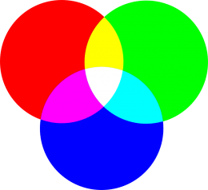

DEFINICION DE COLORES
Usando los nombres de colores
Podemos especificar un color usando un nombre predefinido. Por ejemplo podemos especifi car que el color del párrafo sea rojo con la siguiente regla:
p{
color: red;
}
Lista de los nombres de colores soportados por la mayoría de los navegadores CSS Color Module Level 3
Usando el modelo RGB
Podemos establecer el valor de un color mezclando diferentes intensidades de los tres colores primarios.
Para obtener un color debemos mezclar los colores primarios como un pintor
Hay dos opciones:Usando la función rgb(r,g,b)
Para definir un color como la mezcla las intensidades de los colores primarios podemos usar la función:
rgb(red, green, blue)
Donde:
-
El parámetro red
- Especifica la intensidad del rojo
- Los valores posibles son: [0-255] o [0%-100%]
-
El parámetro green
- Especifica la intensidad del rojo
- Los valores posibles son: [0-255] o [0%-100%]
-
El parámetro blue
- Especifica la intensidad del rojo
- Los valores posibles son: [0-255] o [0%-100%]
Opacidad
Podemos definir la transparencia de un color usando la función rgba, esta función es idéntica a la función rgb, pero con un parámetro adicional denominado opacidad, para especificar la transparencia.
rgba(r,g,b,a)
Donde:
-
El parámetro a
- Especifica la transparencia
Los valores posibles son: [0-1]
- 0, significa completamente transparente
- 1, significa completamente opaco (no transparente)
Usando un valor hexadecimal
Podemos utilizar un número hexadecimal para definir un color. Es una alternativa a la función rgb, es decir permite definir un color como la mezcla de intensidades de los colores primarios
#numero_hexadecimal
Donde:
El número hexadecimal
- Tiene 6 dígitos
- Los primeros dos dígitos indican el color rojo
- Los dos dígitos del medio indican el color verde
- Los dos últimos dígitos indican el color azul
Usando el modelo HSL
En este modelo utilizamos conceptos que son más fáciles de comprender. En CSS para poder trabajar con este modelo tenemos la siguiente opción:
Usando la función hsl(h, s, l)
Podemos definir el color usando la función
hsl(hue, saturation, lightness)
Donde:
El parámetro hue (tono)
- Es el color
- Los valores posibles son: [0-360]
- Podemos obtener los valores de la rueda de colores

El parámetro saturation (saturación)
- etermina que tan fuerte o vivo es un color
-
Los valores posibles son: [0%-100%]
- Donde 100% significa completamente saturado (color muy vivo)
- Donde 0% significa sin saturación alguna (color apagado)

El parámetro ligthness (Luminosidad)
- Permite establecer la claridad u oscuridad de un color
-
Los valores posibles son de: [0%-100%]
- Donde 100% significa completamente blanco (brillantez total)
- Donde 50% es normal
- Donde 0% es competamente negro (sin brillantez)
Ocapacidad
Podemos definir la transparencia de un color usando la función hsla, esta función es idéntica a la función hsl, pero con un parámetro adicional denominado opacidad, para especificar la transparencia.
hsla(h,s,l,a)
Donde:
El parametro a
- Especifica la transparencia
- Los valores posibles son: [0-1]
- 0 significa completamente transparente
- 1 significa completamente opaco (no transparente)
SELECTORES
| Selector | Descripcion | Enlace |
|---|---|---|
| Selectores universales | El selector universal CSS (*) coincide con elementos de cualquier tipo. | link |
| Selectores de tipo | El selector de tipo CSS selecciona elementos por nombre de nodo. En otras palabras, selecciona todos los elementos del tipo dado dentro de un documento. | link |
| Lista de selectores | La lista de selectores CSS (,) selecciona todos los nodos coincidentes. | link |
| Selectores de ID | En un documento HTML, los selectores de ID de CSS buscan un elemento basado en el contenido del atributo id. El atributo ID del elemento seleccionado debe coincidir exactamente con el valor dado en el selector. | link |
| Selectores de hermanos generales | El combinador ~ separa dos selectores y selecciona el segundo elemento sólo si está precedido por el primero y ambos comparten un padre común. | link |
| Los selectores descendientes | El ␣ combinador (que se supone que representan un espacio, o mejor dicho uno o más espacios en blanco) combina dos selectores tales que el selector combinado incluye sólo los elementos que coinciden con el segundo selector para los que hay un elemento ancestro que coincide con el primer selector. Los selectores descendientes son similares a selectores hijos , pero que no requieren que la relación entre los elementos coincidentes ser estrictamente entre padres e hijos. | link |
| Combinador de columnas | El combinador de columnas () se coloca entre dos selectores CSS. Solo coincide con los elementos que coinciden con el segundo selector que pertenecen a los elementos de columna que coinciden con el primero.|| | link |
| Selectores de clases | El selector de clases CSS hace coincidir los elementos en función del contenido de su atributo de clase. | link |
| Child combinator | El combinador secundario () se coloca entre dos selectores CSS. Coincide solo con aquellos elementos emparejados por el segundo selector que son los hijos directos de los elementos emparejados por el primero.> | link |
| Attribute selectors | El selector de atributos CSS hace coincidir elementos en función de la presencia o el valor de un atributo determinado. | link |
LONGITUDES
Hay dos tipos de longitudes utilizadas en CSS: relativas y absolutas. Es importante conocer la diferencia para entender cuán grandes se volverán las cosas.10px30em
Unidades de longitud absoluta
Las siguientes son todas unidades de longitud absoluta: no son relativas a nada más y generalmente se consideran que siempre son del mismo tamaño.
| Unidad | Nombre | Equivalente a |
|---|---|---|
| cm | Centímetros | 1cm = 37.8px = 25.2/64in |
| cm | Centímetros | 1cm = 37.8px = 25.2/64in |
| mm | Milímetros | 1mm = 1/10 de 1cm |
| Q | Cuarto de milímetro | 1Q = 1/40 de 1cm |
| in | Pulgadas | 1 pulgada = 2.54cm = 96px |
| cp | Picas | 1pc = 1/6 de 1 pulgada |
| pt | Puntos | 1pt = 1/72 de 1 pulgada |
| px | Píxeles | 1px = 1/96 de 1 pulgada |
La mayoría de estas unidades son más útiles cuando se utilizan para imprimir, en lugar de la salida en pantalla. Por ejemplo, normalmente no usamos (centímetros) en la pantalla. El único valor que usará comúnmente es (píxeles).cmpx
Unidades de longitud relativa
Las unidades de longitud relativa son relativas a otra cosa, tal vez el tamaño de la fuente del elemento padre o el tamaño de la ventana gráfica. El beneficio de usar unidades relativas es que con una planificación cuidadosa puede hacer que el tamaño del texto u otros elementos se escale en relación con todo lo demás en la página. Algunas de las unidades más útiles para el desarrollo web se enumeran en la siguiente tabla.
| Unidad | Respecto a |
|---|---|
| em | Tamaño de fuente del padre, en el caso de propiedades tipográficas como , y tamaño de fuente del elemento en sí, en el caso de otras propiedades como . font-sizewidth |
| ex | x-altura de la fuente del elemento. |
| ch | La medida avanzada (ancho) del glifo "0" de la fuente del elemento. |
| rem | Tamaño de fuente del elemento raíz. |
| lh | Altura de línea del elemento. |
| rlh | Altura de línea del elemento raíz. Cuando se usa en las propiedades o del elemento raíz, se refiere al valor inicial de las propiedades.font-sizeline-height |
| vw | 1% del ancho de la ventanilla. |
| vh | 1% de la altura de la ventanilla. |
| vmin | 1% de la dimensión más pequeña de la ventanilla. |
PROPIEDADES
Propiedades de fuentes
| Propiedades | Descripcion | Enlace |
|---|---|---|
| familia de fuentes | La propiedad CSS de la familia de fuentes especifica una lista priorizada de uno o más nombres de familia de fuentes y/o nombres de familia genéricos para el elemento seleccionado. | link |
| estilo de fuente | La propiedad CSS de estilo de fuente establece si una fuente debe tener un estilo con una cara normal, cursiva u oblicua de su familia de fuentes. | link |
| font-variant | La propiedad de abreviatura CSS font-variant le permite establecer todas las variantes de fuente para una fuente. | link |
| font-weight | La propiedad CSS font-weight establece el peso (o negrita) de la fuente. Los pesos disponibles dependen de la familia de fuentes que se establece actualmente. | link |
| fuente | La propiedad de abreviatura CSS de fuente establece todas las diferentes propiedades de la fuente de un elemento. Alternativamente, establece la fuente de un elemento en una fuente del sistema. | link |
Propiedades de color y fondo
| Propiedades | Descripcion | Enlace |
|---|---|---|
| color | The color CSS property sets the foreground color value of an element's text and text decorations, and sets the currentcolor value. currentcolor may be used as an indirect value on other properties and is the default for other color properties, such as border-color. | link |
| color de fondo | La propiedad CSS de color de fondo establece el color de fondo de un elemento. | link |
| imagen de fondo | La propiedad CSS de imagen de fondo establece una o más imágenes de fondo en un elemento. | link |
| repetición en segundo plano | La propiedad CSS de repetición de fondo establece cómo se repiten las imágenes de fondo. Una imagen de fondo puede repetirse a lo largo de los ejes horizontal y vertical, o no repetirse en absoluto. | link |
| fondo-adjunto | La propiedad CSS de datos adjuntos de fondo establece si la posición de una imagen de fondo está fija dentro de la ventana gráfica o se desplaza con su bloque que contiene. | link |
| background-position | La propiedad CSS de posición de fondo establece la posición inicial de cada imagen de fondo. La posición es relativa a la capa de posición establecida por origen de fondo. | link |